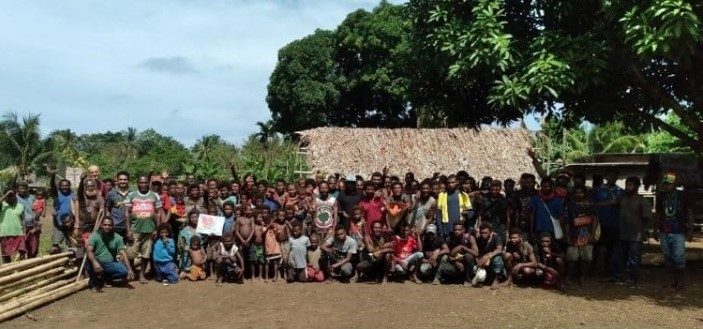

Tavolo Guest House
Comfortable community-run accommodation with local meals and genuine hospitality.
Check AvailabilityWhere You'll Stay
The Tavolo Guest House offers comfortable, clean accommodation managed by the community. Your stay supports local employment and community development while providing authentic experience in a remote destination.
Guest House Rooms & Amenities
The community-run guest house provides simple but clean rooms appropriate for the tropical setting. Standards are good without over-development that would damage the local environment and culture.
Room Features:
- Bedroom: Comfortable bed with quality bedding and mosquito netting for malaria protection
- Shared Bathroom: Clean bathroom facilities with hot water available most times (weather-dependent)
- Natural Ventilation: Rooms designed to catch tropical breezes; some fans available
- Lockable Door: Secure storage for valuables and personal belongings
- Mosquito Protection: Fans, screens, and mosquito netting to minimize insect exposure
- Simple Furnishings: Basic furniture - bed, chair, shelving for organizing belongings
There is no air conditioning, WiFi, or luxury amenities. This reflects authentic tropical remote living while maintaining basic comfort and hygiene standards.


Community Meals & Dining
All accommodations include three daily meals prepared by community members using local ingredients. Meals provide authentic flavors while accommodating basic dietary requirements with advance notice.
Typical Dining Schedule:
- Breakfast (7:00-8:00 AM): Fresh fruit, eggs, local bread, coffee/tea, honey
- Lunch (12:30-1:30 PM): Often packed for those on day activities, or shared at guesthouse
- Dinner (6:00-7:00 PM): Main meal featuring local vegetables, protein (fish, chicken, occasionally game), rice or sago
Common Ingredients:
- Fresh tropical fruits (coconut, papaya, passion fruit, bananas, pineapple)
- Fish from local catches
- Sago (traditional starch from palms)
- Taro and other root vegetables
- Coconut milk in cooking
Meals are communal when possible, offering natural opportunities to connect with other guests and community members. Vegetarian meals available with notice.
Shared Spaces & Community Areas
Beyond bedrooms, the guest house includes common areas for relaxation, socializing, and community interaction. These spaces reflect community architecture and design.
Shared Facilities:
- Dining Area: Where meals are served and guests gather
- Sitting Area: Covered outdoor structure for relaxing, conversation, wildlife watching
- Kitchen: Where meals are prepared; guests may watch or participate cooking demonstrations
- Laundry: Basic laundry service available; hand washing of delicates recommended
- Limited Storage: Space for equipment and supplies used during activities

Rates & Booking
Accommodation Rates: Pricing varies by season and group size. Rates are per person per night and include accommodation, all meals, and community support services.
What's Included:
- Comfortable bedroom with mosquito netting
- All meals (breakfast, lunch, dinner)
- Experienced community guides for activities
- Basic first aid and communication
- Local knowledge and cultural exchange
What's Not Included:
- International or regional airfare
- Boat transfers (can be arranged, ask for pricing)
- Specialized equipment (diving gear, telephoto cameras)
- Alcoholic beverages
- Travel insurance and medical evacuation